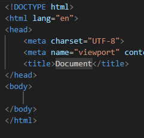
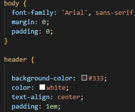
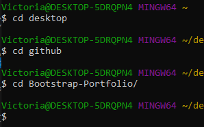
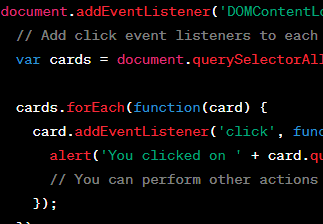

HTML
HTML is the standard markup language for Web pages. With HTML you can create your own Website..

CSS
CSS is the language we use to style an HTML document. CSS describes how HTML elements should be displayed.

Git
Git is a distributed version control system (VCS) that is used for tracking changes in source code during software development.

JavaScript
JavaScript is a high-level, dynamic, and versatile programming language that is primarily used to enhance the interactivity and functionality of web pages.

Bootstrap
Bootstrap is an open-source front-end framework originally created by Twitter. It provides a collection of pre-designed HTML, CSS, and JavaScript components.